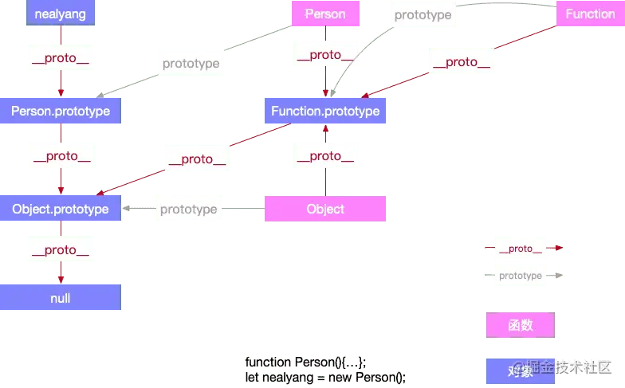

Prototype
函数对象和普通对象
在js中，创建对象有好几种方式，比如对象字面量，或者是直接通过构造函数new一个对象出来，虽然都是对象，却存在着差异性，js中，我们将对象分为函数对象和普通对象。函数对象就是用函数来模拟类的实现
1 | function func1(){} |
- 上述代码中，obj1,obj2,obj3,obj4都是普通对象
- func1，func2，func3都是Function的实例，也就是函数对象
- 可以看出所有Function的实例都是函数对象其他都为普通对象包括Function实例的实例
- Function和new Function的关系为
Function.__proto__=== Function.prototype__proto__和constructor是对象独有的，prototype属性是函数独有的，但是在js中函数也是对象，所以函数也拥有__proto__和constructor属性

proto
es规范里描述prototype是一个隐式引用，但是之前的一些浏览器已经私自实现了__proto__这个属性，使得可以通过obj.__proto__这个显示的属性访问访问到被定义为隐式属性的prototype
- __proto__属性既不能被for…in遍历出来，也不能被Object.keys(obj)查找出来
- 访问对象的obj.proto,默认走的是object.prototype对象上__proto__属性的get/set方法
- __proto__是函数指向对象
原型链
__proto__是对象所独有的，并且__proto__是一个对象指向父类对象，它的作用是当你在访问一个对象属性的时候，如果对象内部没有这个属性，那他就在他的__proto__属性所指的对象（父类对象）上查找，如果父类对象依旧不存在这个属性，那他就在他父类的__proto__所指的对象上查找，以此类推，直到找到null，这个查找的过程也构成了原型链
prototype
在规范里，prototype被定义为给其他对象提供共享属性的对象
- prototype自己也是对象，只是被用以承担某个职能
- 所有对象都可以作为另一个对象的prototype使用
- prototype是函数独有的，它的作用是可以给特定类型的所有实例提供共享的属性和方法，任何函数在创建的时候，都会给该函数添加prototype属性

constructor
constructor属性也是对象所独有的，它是一个对象指向一个函数，这个函数就是该对象的构造函数
- 每个对象都有对应本身或者继承而来的构造函数
- 只有prototype对象有constructor这个属性
- 在每个函数创建的时候js会同时创建一个prototype对象，且
该对象创建的函数.__proto__ === 该函数.prototype，该函数.prototype.constructor === 该函数 - 所以通过函数创建的对象即使已经没有constructor属性，也能通过__proto__找到对应的constructor
上图虚线表示继承来的constructor
typeof && instanceof
typeof
typeof一般被用来判断一个变量的类型
- 我们可以使用typeof来判断number、undefined、symbol、string、function、boolean、object 这七种数据类型，
- 但是判断Object的时候并不能明确的告诉你object属于哪一种object
1
2
3let s = new String('abc');
typeof s === 'object'//true
typeof null;//'object'原理
js在底层存储变量的时候会在变量的机器码的低位1-3位存储其类型信息 - 1：整数
- 110：布尔
- 100：字符串
- 010：浮点数
- 000：对象
对于undefined和null、，这两个值的信息存储是特殊的 - null：所有机器码均为0
- undefined：用 −2^30 整数来表示
在使用typeof来判断变量类型的时候，最好用typeof来判断基本数据类型，避免对null的判断
instanceof
instanceof运算符用来检测constructor.prototype是否存在于object的原型链上，与typeof方法不同的是，instanceof方法要求开发者明确地确认对象为某特定类型
- 如下，是instanceof的基本用法，它可以判断一个实例是否是其父类型或者祖先类型的实例
1
2
3
4
5
6
7
8
9
10
11
12
13
14
15
16
17
18
19
20
21
22
23
24
25
26// 定义构造函数
function C(){}
function D(){}
var o = new C();
o instanceof C; // true，因为 Object.getPrototypeOf(o) === C.prototype
o instanceof D; // false，因为 D.prototype 不在 o 的原型链上
o instanceof Object; // true，因为 Object.prototype.isPrototypeOf(o) 返回 true
C.prototype instanceof Object // true，同上
C.prototype = {};
var o2 = new C();
o2 instanceof C; // true
o instanceof C; // false，C.prototype 指向了一个空对象,这个空对象不在 o 的原型链上.
D.prototype = new C(); // 继承
var o3 = new D();
o3 instanceof D; // true
o3 instanceof C; // true 因为 C.prototype 现在在 o3 的原型链上
继承
ES5继承实现方式
es5规范中新增了Object.create()方法，该方法会传入一个对象，返回一个对象，返回的对象的原型指向传入的对象。比如执行代码var output = Object.create(input)，相当于执行代码output.proto = input,output的原型是input
Object.keys()方法用以获取对象自身的属性数组，我们可以用该方法简化继承父类静态属性和方法的过程
1 | function extendsClass(child,Father){ |